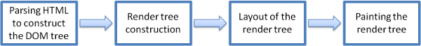
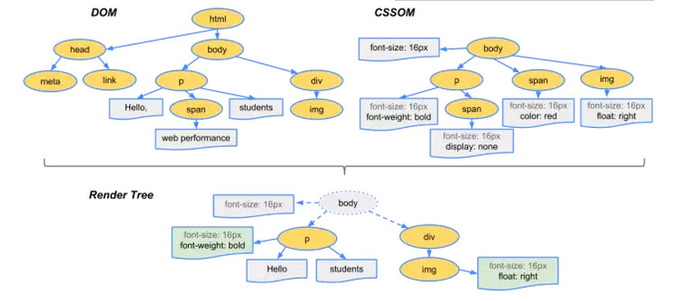

介绍
我们将讨论的浏览器
目前有五种主流浏览器 - Internet Explorer，Firefox，Safari，Chrome和Opera。
这里将举出三种开源浏览器的例子 - Firefox，Chrome和Safari是基于两种渲染引擎构建的，Firefox使用Geoko——Mozilla自主研发的渲染引擎，Safari和Chrome都使用webkit。
浏览器的高级结构
浏览器的主要组件是：
- 用户界面 - 包括地址栏，后退/前进按钮，书签菜单等。浏览器的每个部分都显示除了主窗口，您可以看到请求的页面。
- 浏览器引擎 - 查询和操作渲染引擎的界面。
- 渲染引擎 - 负责显示请求的内容。例如，如果请求的内容是HTML，则它负责解析HTML和CSS并在屏幕上显示解析的内容。
- 网络 - 用于网络呼叫，如HTTP请求。它具有与平台无关的接口和每个平台的底层实现。
- UI后端 - 用于绘制组合框和窗口等基本小部件。它公开了一个不是平台特定的通用接口。它下面使用操作系统用户界面方法。
- JavaScript解释器。用于解析和执行JavaScript代码。
- 数据存储。这是一个持久层。浏览器需要保存硬盘上的各种数据，例如cookie。新的HTML规范（HTML5）定义了“web数据库”，它是浏览器中的完整（尽管是轻量级）数据库。
渲染引擎
渲染引擎基本流程
解析html以构建dom树 -> 构建render树 -> 布局render树 -> 绘制render树

主要流程示例
当浏览器获得一个html文件时，会“自上而下”加载，并在加载过程中进行解析渲染。
1.浏览器会将HTML解析成一个DOM树，DOM 树的构建过程是一个深度遍历过程：当前节点的所有子节点都构建好后才会去构建当前节点的下一个兄弟节点。
2.将CSS解析成 CSS Rule Tree 。
3.根据DOM树和CSSOM来构造 Rendering Tree。注意：Rendering Tree 渲染树并不等同于 DOM 树，因为一些像Header或display:none的东西就没必要放在渲染树中了。
4.有了Render Tree，浏览器已经能知道网页中有哪些节点、各个节点的CSS定义以及他们的从属关系。下一步操作称之为Layout，顾名思义就是计算出每个节点在屏幕中的位置。
5.再下一步就是绘制，即遍历render树，并使用UI后端层绘制每个节点。

Mozilla的Gecko渲染引擎主流

Webkit主流程

两个重要的概念
- Reflow（回流）：当页面上某些元素的几何尺寸发生变化影响了布局，浏览器就会重新验证并计算Render Tree，这就是Reflow，或是Layout。 Reflow 会从 这个 root frame 开始递归往下，依次计算所有的结点几何尺寸和位置。Reflow 几乎是无法避免的。现在界面上流行的一些效果，比如树状目录的折叠、展开（实质上是元素的显 示与隐藏）等，都将引起浏览器的 Reflow。鼠标滑过、点击……只要这些行为引起了页面上某些元素的占位面积、定位方式、边距等属性的变化，都会引起它内部、周围甚至整个页面的重新渲 染。通常我们都无法预估浏览器到底会 Reflow 哪一部分的代码，它们都彼此相互影响着。
- Repaint（重绘）：当页面上某些元素的背景色、文字颜色、边框颜色等等不影响它周围或内部布局的属性发生变化是时，将只引起浏览器的Repaint，重画某一部分。
Reflow的成本比Repaint的成本高得多的多。DOM Tree里的每个结点都会有Reflow方法，一个结点的Reflow很有可能导致子结点，甚至父点以及同级结点的Reflow。在一些高性能的电脑上也许还没什么，但是如果Reflow发生在手机上，那么这个过程是非常痛苦和耗电的。
基本上来说，Reflow有如下的几个原因：
- Initial: 网页初始化的时候。
- Incremental: 一些Javascript在操作DOM Tree时。
- Resize: 其些元件的尺寸变了。
- StyleChange: 如果CSS的属性发生变化了。
- Dirty: 几个Incremental的Reflow发生在同一个frame的子树上。
当然，我们的浏览器是聪明的，它不会像上面那样，你每改一次样式，它就Reflow或Repaint一次。一般来说，浏览器会把这样的操作积攒一批，然后做一次Reflow，这又叫异步Reflow或增量异步Reflow。但是有些情况浏览器是不会这么做的，比如：resize窗口，改变了页面默认的字体，等。对于这些操作，浏览器会马上进行Reflow。
减少Reflow/Repaint
一、不要一条一条地修改DOM的样式。与其这样，还不如预先定义好css的class，然后修改DOM的className。
二、把DOM离线后修改。如：
- 使用documentFragment 对象在内存里操作DOM
- 先把DOM给display:none(有一次reflow)，然后你想怎么改就怎么改。比如修改100次，然后再把他显示出来。
- clone一个DOM结点到内存里，然后想怎么改就怎么改，改完后，和在线的那个的交换一下。
三、不要把DOM结点的属性值放在一个循环里当成循环里的变量。不然这会导致大量地读写这个结点的属性。
四、尽可能的修改层级比较低的DOM。当然，改变层级比较底的DOM有可能会造成大面积的reflow，但是也可能影响范围很小。
五、为动画的HTML元件使用fixed或absoult的position，那么修改他们的CSS是不会reflow的。
六、千万不要使用table布局。因为可能很小的一个小改动会造成整个table的重新布局。
处理脚本和样式表的顺序
脚本
网络的模型是同步的。作者期望脚本在解析器到达<script>标记时被解析并立即执行。文档解析暂停，直到脚本执行完毕。如果脚本是外部的，那么必须首先从网络获取资源 - 这也是同步完成的，解析将暂停直到资源被获取。这是多年的模式，并且在HTML 4和5规范中也有规定。作者可以将脚本标记为“defer”，因此它不会停止文档解析并在解析后执行。HTML5添加了一个选项，将脚本标记为异步，以便由另一个线程解析和执行脚本。
样式表
另一方面，样式表有不同的模型。从概念上看，由于样式表不会更改DOM树，所以没有理由等待它们并停止文档解析。不过，在文档分析阶段，脚本会询问样式信息。如果样式尚未加载并解析，脚本将得到错误的答案，显然这导致了很多问题。这似乎是一个边缘案例，但相当普遍。当有一个仍在加载和解析的样式表时，Firefox将阻止所有脚本。Webkit仅在脚本尝试访问某些可能受卸载样式表影响的样式属性时才阻止脚本。
因此我们一般会将样式文件放在header中，而将script标签放在body结束标签之前